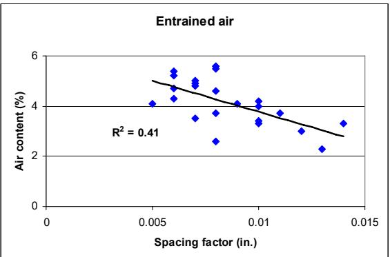
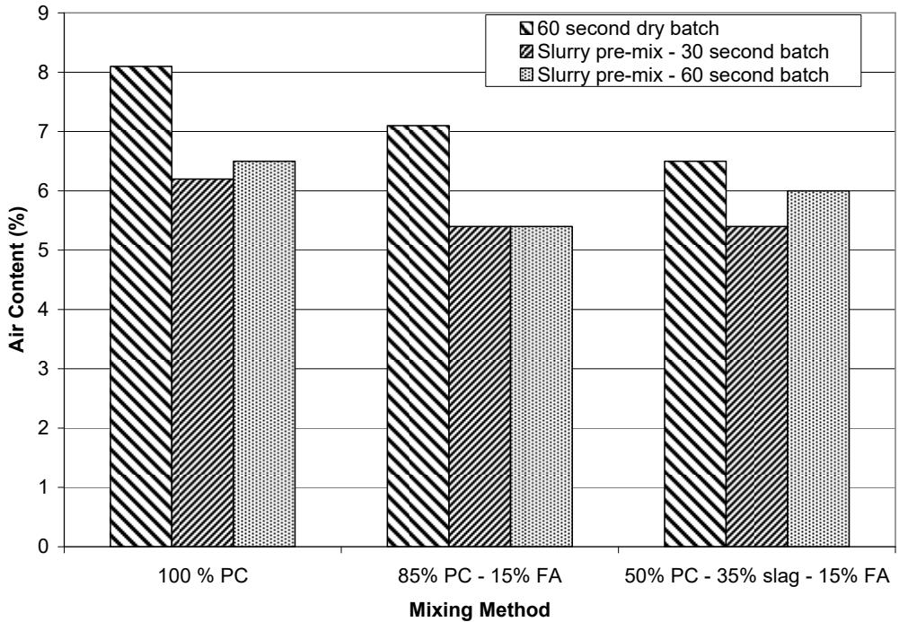

Freeze-Thaw Durability
Freeze-thaw durability is the capacity of concrete to withstand repeated cycles of freezing and thawing without sustaining structural damage or surface deterioration. This deterioration mechanism is primarily driven by the volumetric expansion of water upon freezing, which generates internal hydraulic and osmotic pressures within the pore structure that can exceed the material’s tensile strength [1] [2] [3] [4]. The susceptibility of concrete to this damage is fundamentally governed by its pore structure, specifically the degree of saturation and the distribution of capillary pores that retain water and facilitate ice segregation [3] [5] [6] [7] [4]. To mitigate these internal stresses, durability relies on an entrained air void system that provides microscopic relief valves for expanding ice, thereby preventing cracking and scaling [1] [2] [8] [9]. The effectiveness of this protection depends on the uniformity, size, and spacing of these air bubbles, which must be optimized through mix design and production controls to ensure long-term resistance [1] [8] [9] [10].
CP Tech Center reports covering “Freeze-Thaw Durability” also include the following subtopics: ASTM C672 — Standard Test Method for Scaling Resistance of Concrete Surfaces Exposed to Deicing Chemicals, BNQ NQ 2621-900 — Quebec Scaling Test Method, Degree of Saturation, Deicing Salt Effects, and One-Dimensional Freezing.
Freeze-Thaw Durability covers the mechanisms and testing protocols that define concrete’s resistance to damage from cyclic freezing and thawing. Degree of Saturation determines the critical threshold of pore water availability that triggers internal hydraulic and osmotic pressures during freezing cycles, thereby directly governing the onset and severity of freeze-thaw deterioration. Deicing Salt Effects accelerate freeze-thaw deterioration by inducing chemical expansion and physical stress within concrete pores that compromise structural integrity during cyclic temperature changes. ASTM C672 — Standard Test Method for Scaling Resistance of Concrete Surfaces Exposed to Deicing Chemicals quantifies the surface deterioration caused by deicing agents, providing a direct measure of how well concrete maintains its integrity under freeze-thaw stress. BNQ NQ 2621-900 — Quebec Scaling Test Method evaluates freeze-thaw durability by quantifying surface scaling resistance under deicing salt exposure, providing a less aggressive alternative to standard procedures for concretes containing supplementary cementitious materials. One-Dimensional Freezing isolates the directional progression of ice lens formation and internal stress accumulation by subjecting concrete specimens to a unidirectional temperature gradient, thereby providing a controlled mechanism to evaluate how specific pore structures resist the physical deterioration inherent in freeze-thaw cycles.
Sources (26)
Sub-concepts (5)
Fundamentals
The durability of concrete under freeze-thaw cycles is fundamentally governed by the internal pore structure, where the presence of interconnected voids allows water ingress and subsequent expansion during freezing. Materials with higher porosity or increased water absorption capacity are inherently more vulnerable to deterioration because they retain greater volumes of freezable water within their capillary networks [11]. Mitigating this susceptibility requires careful management of the mixture composition to control saturation levels and ensure sufficient resistance to internal hydraulic pressures generated during phase changes.
Key findings
- The report found that freeze-thaw durability is critically dependent on the air void system’s spacing factor and specific surface area rather than total air content alone, with inadequate bubble spacing compromising resistance even when total air levels appear sufficient [1] [9].
- The evaluation showed that surface scaling resistance in ternary mixtures is predominantly controlled by the specific chemistry of supplementary cementitious materials, with fly ash and slag generally reducing severity while silica fume and metakaolin often failed to mitigate deterioration [12] [13].
- The assessment revealed a significant disconnect between laboratory predictions and field performance, with standardized tests like ASTM C672 often showing poor agreement with actual pavement scaling due to differences in saturation conditions and chemical interaction mechanisms [14] [15].
- The study observed that construction-related issues, such as retempering and discrepancies between nominal and actual water-to-cementitious ratios, played a larger role in field scaling performance than material composition or air-void spacing factors [14].
- The analysis demonstrated that non-air-entrained concrete requires a synergistic combination of very high compressive strength and low permeability to resist freeze-thaw damage, whereas air-entrained resistance relies primarily on the adequacy of the air void system [2].
- The study found that penetrating sealers can paradoxically aggravate freeze-thaw deterioration by sealing in moisture or causing layer separation, indicating that reducing water absorption does not guarantee improved frost resistance and may impede necessary desaturation [4].
- The research established that freeze-thaw durability in pervious concrete is critically dependent on achieving sufficient paste-to-aggregate bonding through fine aggregates or latex admixtures, as standard immersion testing methods are inadequate for simulating field exposure [15].
- The report indicated that self-consolidating concrete exhibits comparable freeze-thaw durability to conventional mixtures when air content is properly controlled, but field evaluations revealed scaling damage in specific mixes despite favorable laboratory durability factors [16].
Air-Void System and Entrainment Strategies
Evidence: 22 reports (20 primary)
The air-void system serves as a critical internal pressure relief mechanism, providing microscopic voids that accommodate the volumetric expansion of pore water during freezing to prevent cracking and scaling [1] [2]. Effective protection relies on specific microstructural parameters, including total air volume, bubble size, and spacing factor, which determine whether adjacent voids are sufficiently close to relieve hydraulic stress within the cement paste [9]. Air-entraining agents are employed to stabilize a network of microscopic bubbles in fresh concrete, ensuring the uniform distribution necessary for long-term durability under cyclic freeze-thaw exposure [2] [8].
Research problem — Research must resolve the discrepancy between laboratory scaling test results and actual field performance, particularly for mixtures containing supplementary cementitious materials where standard procedures often fail to account for slower property development or construction-related variables [14] [3]. There is a critical need to establish reliable quality control methods that accurately measure air-void geometry and spacing in fresh concrete, as current total air content measurements are insufficient predictors of freeze-thaw durability and existing rapid testing tools suffer from high variability [9] [10]. Investigations are required to determine how chemical interactions, such as secondary ettringite formation or oxychloride generation, compromise the air-void system’s pressure relief capacity and whether specific entrainment strategies can mitigate these synergistic deterioration mechanisms [1] [17] [5].
State of the art — The field has shifted from relying on total air content to evaluating the complete air-void system, specifically spacing factor and specific surface, as these microstructural parameters are superior indicators of freeze-thaw resistance [1] [9] [10]. Current practice increasingly utilizes rapid field testing tools like the Air-Void Analyzer and Super Air Meter to monitor fresh concrete properties for real-time quality control, although challenges remain in correlating these measurements with hardened durability metrics due to equipment variability [17] [9] [10]. Entrainment strategies must account for material-specific interactions, such as the high surface area of supplementary cementitious materials and the absorptive nature of aggregates, which can compromise void stability if admixture compatibility is not carefully managed [18] [1] [8].
The following figure illustrates the Air Void Analyzer used to monitor these critical fresh concrete properties.
 Air Void Analyzer [9]
Air Void Analyzer [9]
The figure shows a stainless steel mobile laboratory unit equipped with an Air-Void Analyzer (AVA) and isolation base. This equipment is used to evaluate the air void system of fresh concrete, including total volume, size, and distribution of air voids. By providing this information for real-time quality control adjustments, the device helps improve the air void spacing to increase freeze-thaw durability.
Findings from the reports
- The air void spacing factor, rather than total air content alone, critically determined freeze-thaw durability, as samples with high entrapped air but poor spacing failed while those with tighter spacing passed [18] [1] [9].
- Carbonate aggregates generally performed worse than non-carbonate counterparts in freeze-thaw testing due to a finer pore structure with higher volumes of micropores that impeded water escape and increased hydraulic pressure [5] [6] [4].
- Internal structural integrity and surface scaling resistance diverged significantly, with mixtures achieving satisfactory internal durability factors but exhibiting severe surface scaling depending on the specific supplementary cementitious materials used [12] [13].
- Pervious concrete required modified testing methods because standard ponding techniques were unsuitable due to the material’s high permeability causing chemicals to drain through rather than remain on the surface [19] [15].
- Found that internal curing enhances freeze-thaw durability by providing internal water reservoirs that maintain high moisture levels during hydration, improving hardened properties and resistance to deterioration cycles compared to conventional mixtures [20] [21].
- Construction-related issues such as retempering and elevated water-to-cementitious ratios played a more significant role in observed surface scaling than the inherent mixture composition or slag content [14].
- Freeze-thaw durability mechanisms diverged fundamentally based on air entrainment, with non-air-entrained mixes requiring very high compressive strength and low permeability while air-entrained mixes relied primarily on an adequate void system [2].
- Standardized laboratory tests like ASTM C672 often showed poor agreement with field observations, as construction errors rather than material deficiencies drove the observed distress in field cores [14].
- Penetrating sealers that reduced water absorption could paradoxically aggravate freeze-thaw deterioration by trapping moisture within the concrete matrix behind a hydrophobic layer [22].
- The Air-Void Analyzer exhibited significantly higher variability than standardized hardened concrete tests, with poor agreement between its acceptance criteria and actual durability performance [10].
- Observed that concrete joints suffered premature deterioration through chemical infilling where deicer solutions fueled secondary ettringite deposition that filled fine entrained air voids, rendering the protective system ineffective even when initial parameters were compliant with standards [23].
- Two-stage mixing processes reduced total air content and increased the air void spacing factor in hardened concrete, making the mix more susceptible to freeze-thaw deterioration compared to conventional dry-batch methods [24].
Novelty & rigor — The Air Void Analyzer enables real-time characterization of fresh concrete microstructure, specifically quantifying small air voids and spacing factors to overcome the disconnect between total gravimetric air content and actual freeze-thaw resistance [9] [10]. Novel assessment frameworks shift focus from standard immersion protocols to drained testing for pervious concrete and desaturation tests for sealed surfaces, addressing the inability of conventional methods to simulate realistic moisture exchange mechanisms [22] [15]. Reproducibility in air-void system evaluation requires strict control over testing variables, including maintaining specific Air Void Analyzer fluid viscosity ranges and standardizing mixing sequences to prevent the artificial reduction of entrained air efficiency [24] [10].
The following figure illustrates the air-void analyzer used to perform these rigorous microstructural characterizations.
 Air-void analyzer [10]
Air-void analyzer [10]
The image displays a stainless steel Air Void Analyzer (AVA) unit situated on a laboratory bench. This equipment is used for measuring the air-void structure parameters in fresh concrete, specifically quantifying entrained air which is known to be effective in frost resistance. By determining the size and distribution of air bubbles, including the spacing factor, the device provides critical data on the concrete’s capacity to withstand repeated cycles of freezing and thawing.
Reported values
| Parameter | Value | Context | Source |
|---|---|---|---|
| air content | 5% | marginal factor for freeze-thaw deterioration | [23] |
| relative dynamic modulus (RDM) | > 90% | SoTa and 40% silane treatments after 140 cycles | [22] |
| cumulative mortar air content | 9% | threshold for good air-void distribution curve | [18] |
| air void system adequacy failure rate | 39% | cores based on bubble spacing factor | [1] |
| durability factor | 100 | after 300 cycles | [12] |
| durability factor | 100 | mixtures after 300 cycles | [13] |
| durability factor | 79% | Mix 3 | [17] |
| air content | 6% | concrete with AEA | [2] |
| scaling mass loss | 1.5 lbs/yd2 | Site 13 cores | [14] |
| carbonate content limit | 30% | aggregate acceptance criterion | [5] |
| macropore intrusion conclusion time | 15 s | most macropore intrusion (Heterogeneity-Aware IPI Method) | [4] |
| moisture content change | 15.8% | cement-stabilized samples with low initial moisture contents | [25] |
| cycles to failure threshold | 153 cycles | Mix No. 4-RG reaching 15% mass loss | [19] |
| mass loss | 2% | Mix No. 4-RG-S7 with air entrainment after 300 cycles | [15] |
| acceptance/rejection agreement | 50% | between C457 and AVA test methods when spacing factor criterion 0.008 in. applied | [10] |
58 more distinct values omitted here; the full span-verified set is in the quantities sidecar.
Across the reviewed reports, freeze-thaw durability is fundamentally governed by the air-void system’s spacing factor and specific surface area rather than total air content alone, as closely spaced entrained voids are necessary to accommodate expansive pressures while entrapped air or inadequate distribution fails to provide protection. While adequate air entrainment generally ensures high durability factors regardless of water-to-binder ratios or cementitious types, the effectiveness of this system can be compromised by construction practices such as retempering, poor consolidation, or two-stage mixing processes that increase spacing factors. The reliability of air-void characterization is further complicated by significant variability in testing methods like the Air-Void Analyzer compared to standardized point-count techniques, indicating that current quality control metrics often struggle to accurately predict field performance without refined acceptance criteria. [18] [1] [2] [14] [24] [9] [10]
The figure below illustrates how the durability factor correlates with both the percentage of air and the spacing factor in air-entrained samples.
 Venn diagram illustrating the intersection of durability factor, air content, and spacing factor requirements for freeze-thaw resistant concrete. [2]
Venn diagram illustrating the intersection of durability factor, air content, and spacing factor requirements for freeze-thaw resistant concrete. [2]
The central intersection of these three regions contains specific sample identifiers, indicating that meeting all three criteria is necessary for the observed durability performance. This visualization demonstrates how freeze-thaw durability is governed by the combined effect of total air volume and the specific spacing of entrained voids.
Implications — Specifications must shift from relying on total air content to actively monitoring and optimizing the air void spacing factor and specific surface area, as these structural parameters are the primary determinants of freeze-thaw resistance [1] [17] [9]. Practitioners should adopt real-time field monitoring tools to detect air void structure deficiencies immediately, enabling timely mix adjustments that prevent premature deterioration caused by poor void distribution [9]. Quality control protocols must rigorously standardize testing procedures and account for mixture-specific variables to ensure that fresh concrete air-void measurements reliably predict long-term durability performance [10].
The following figure illustrates how different concrete materials influence air void structure parameters.
 Effect of mixing time on air content measurements. [10]
Effect of mixing time on air content measurements. [10]
The figure plots the percentage of air content in concrete against increasing mixing durations, showing a trend where the measured values rise from an initial low point and stabilize at higher levels as mixing continues.
Limitations — Standard quality control tests that measure only total air content are insufficient predictors of performance because they fail to capture the critical void size and distribution parameters, such as spacing factor, which actually govern freeze-thaw resistance [1] [9]. The effectiveness of air entrainment is highly sensitive to material interactions, where chemical incompatibilities with certain admixtures or supplementary cementitious materials can lead to bubble clustering and reduced durability [1] [8]. Mixing processes significantly influence air-void system quality, as two-stage mixing methods often reduce entrainment efficiency and increase spacing factors compared to conventional techniques [24].
The following figure illustrates the relationship between entrained air and the spacing factor that governs freeze-thaw resistance.

Entrained air in the concrete vs. spacing factor [1]The figure plots a scatter of data points representing air content against spacing factor, showing a negative correlation where higher spacing factors correspond to lower air content.
Scaling Mechanisms and Deicing Chemical Interactions
Evidence: 3 reports (1 primary)
Scaling is a surface deterioration mechanism in concrete where the paste layer detaches due to expansive crystallization of salts resulting from freezing or evaporation of deicing solutions [3]. The severity of this damage is fundamentally governed by material permeability, degree of saturation, and the efficiency of the air-void system in mitigating internal hydraulic pressures during freeze-thaw cycles [3].
Findings from the reports
- Distress in concrete exposed to freeze-thaw cycles and deicing chemicals is rarely caused by a single parameter but rather results from the combination of multiple marginal factors [23].
- The presence of deicing salts alters key physical properties of the pore solution, including viscosity, water activity, surface tension, and density [23].
- Deicing salt solutions preferentially penetrate concrete through the interfacial zone rather than uniformly throughout the matrix [23].
- The effects of deicing salts often act as a tipping point that triggers or accelerates deterioration mechanisms in concrete systems [23].
Novelty & rigor — Research has identified a novel deterioration mechanism where secondary ettringite precipitates within and fills entrained air voids near pavement joints during saturation with deicer solutions, thereby compromising the freeze-thaw resistance of originally durable mixes [23]. Methodological rigor in reproducing scaling resistance results requires strict adherence to specific preconditioning protocols, such as accelerated curing followed by drying, and accounts for critical variables like air-entraining admixture type and one-dimensional freezing conditions that reduce hydraulic pressures [3].
The following figure illustrates how this deterioration manifests as cracks concentrated adjacent to the coarse aggregate in FG1.
 Cracks concentrated adjacent to the coarse aggregate in FG1 [23]
Cracks concentrated adjacent to the coarse aggregate in FG1 [23]
The image displays a cross-section of concrete containing coarse aggregate particles and numerous small air voids. Red lines highlight cracks that are propagating through the cement paste matrix, specifically concentrating in the interfacial zone surrounding a large aggregate particle on the right side of the image. This localized damage illustrates how water and salt solutions can penetrate the interfacial zone to accelerate distress, a mechanism that compromises the freeze-thaw resistance of durable mixes.
Implications — Designers must prioritize low permeability and strict control of the water-to-cement ratio, as these factors are more critical to scaling resistance than air-void spacing alone [23]. Specifiers should account for secondary ettringite formation that degrades air void systems during saturation, necessitating mitigation strategies such as joint sealants or design details that prevent salt and water ponding [23]. The use of prewetted lightweight fine aggregate is recommended for internal curing to enhance freeze-thaw durability by improving particle spacing and reducing porosity, offering superior resistance compared to coarse aggregates [20].
Construction Process and Durability Assessment
Evidence: 2 reports (1 primary)
The quality of concrete is fundamentally determined by the mixing process, where factors such as mixer type, loading sequence, and duration govern the homogeneity and uniform distribution of constituents [24]. Optimizing these procedural variables ensures that critical properties like air content and interfacial transition zone integrity are established before the material is placed in service [24]. Once constructed, durability assessment relies on nondestructive testing techniques to evaluate internal conditions without impairing structural usefulness [26]. These evaluation methods are essential for detecting subsurface deterioration mechanisms that may not be visible on the surface but directly impact long-term performance [26].
The following figure illustrates how different mixing methods influence the air content in fresh concrete.

Effects of mixing method on the air content of fresh concrete [24]The figure displays a bar chart comparing the percentage of air content in fresh concrete across three different mix designs using three distinct mixing methods. This reduction in air content is attributed to the limited ability of fine binder materials to entrap air during the slurry mixing process, a critical factor for freeze-thaw durability which relies on entrained voids.
Research problem — Standard visual inspections fail to detect internal distress that initiates at the slab base or within aggregates, creating a critical gap in assessing freeze-thaw durability before surface symptoms appear [26]. The subjective nature of severity assessment for invisible deterioration necessitates reliable nondestructive testing methods to identify subsurface damage early in the construction lifecycle [26]. Current nondestructive techniques yield inconsistent results due to interference from high moisture content and specific distress types, highlighting an urgent need for improved data interpretation software rather than solely hardware advancements [26].
Findings from the reports
- Ground Penetrating Radar successfully identified subsurface distress associated with aggregate-induced durability issues, even when surface symptoms were not readily evident [26].
- Ground Penetrating Radar failed to detect extensive map cracking in pavements suffering from paste-related premature distress, suggesting that signal masking by excessive moisture or specific material properties can obscure radar responses for this failure mode [26].
- Materials-related distress in concrete pavements is often driven by durability issues such as aggregate failure or paste deterioration rather than structural loading, necessitating detection methods capable of identifying subsurface flaws before they manifest on the surface [26].
- Current nondestructive evaluation techniques are limited not by hardware but by the complexity of data interpretation, highlighting a critical need for improved software and visualization tools to reliably diagnose materials-specific failures in situ [26].
Novelty & rigor — The research introduces a high-speed, nondestructive assessment framework using Ground Penetrating Radar to objectively identify subsurface distress mechanisms associated with freeze-thaw damage during routine traffic operations [26]. Methodological reproducibility is established through controlled field surveys that integrate variable antenna configurations and signal processing software, validated by correlating radar data with destructive core analysis to account for site-specific moisture conditions [26].
The following figure illustrates high-resolution GPR data collected during these field surveys.
 High-Resolution GPR Data from P 73 (note lack of distress features in signal) [26]
High-Resolution GPR Data from P 73 (note lack of distress features in signal) [26]
The figure displays a Ground Penetrating Radar (GPR) time-section plot showing signal amplitude variations over pavement depth and distance.
Implications — Construction teams should recognize that nondestructive testing for subsurface freeze-thaw distress is currently limited by high variability and environmental interference, requiring careful interpretation rather than relying on automated or standardized outputs [26]. Durability assessment practices must account for the fact that hardware improvements alone are insufficient; effective evaluation depends on advanced software development to visualize data and fuse multiple nondestructive inputs to distinguish material distress from structural issues [26].
Limitations — Current in-situ detection techniques are not universally reliable across all deterioration mechanisms, as methods like ground penetrating radar may fail to identify paste-related distress while successfully detecting aggregate-induced issues [26]. Signal interpretation remains heavily dependent on expert judgment rather than automated software, indicating a need for further refinement of antenna configurations and data analysis protocols to distinguish between different types of internal degradation [26].
Related concepts
In this hierarchy
- Parent: Durability & Materials-Related Distress
- Child: ASTM C672 — Standard Test Method for Scaling Resistance of Concrete Surfaces Exposed to Deicing Chemicals
- Child: BNQ NQ 2621-900 — Quebec Scaling Test Method
- Child: Degree of Saturation
- Child: Deicing Salt Effects
- Child: One-Dimensional Freezing
Related by shared evidence
- CP Tech Center Reports — shares 25 reports
- Air Entraining Agent — shares 23 reports
- Supplementary Cementitious Materials — shares 22 reports
- Concrete Materials & Mixtures — shares 21 reports
- Fly Ash — shares 20 reports
- Cementitious Materials & Chemistry — shares 18 reports
- Cement Hydration — shares 16 reports
- Chemical Admixtures for Concrete — shares 15 reports
Similar topics
- Air Entraining Agent
- Low-Permeability Concrete
- Supplementary Cementitious Materials
- Fly Ash
- Concrete Curing
- Sulfate Attack
- Durability & Materials-Related Distress
- Degree of Saturation
References
- J. Grove, F. Bektas, and H. Gieselman, "Southeast Michigan Local Road Concrete Pavement Durability Study," National Concrete Pavement Technology Center, Ames, IA, 2006. [Online]. Available: https://www.cptechcenter.org/wp-content/uploads/2018/03/mi_pavement_durability.pdf
- K. Wang, G. Lomboy, and R. Steffes, "Investigation into Freezing-Thawing Durability of Low-Permeability Concrete with and without Air Entraining Agent," National Concrete Pavement Technology Center, Ames, IA, 2009. [Online]. Available: https://www.intrans.iastate.edu/wp-content/uploads/2018/03/low-permeability-concrete.pdf
- R. D. Hooton and D. Vassilev, "Deicer Scaling Resistance of Concrete Mixtures Containing Slag Cement, Phase 2," National Concrete Pavement Technology Center, Ames, IA, Rep. TPF-5(100), 2012. [Online]. Available: https://www.intrans.iastate.edu/research/completed/deicer-scaling-resistance-of-concrete-pavements-bridge-decks-and-other-structures-containing-slag-cement-phase-2-evaluation-of-different-laboratory-scaling-test-methods/
- J. F. Orso, IV and F. Hasiuk, "Calibrating the Iowa Pore Index with Mercury Intrusion Porosimetry and Petrography — Phase II," Geological and Atmospheric Sciences, Ames, IA, Rep. InTrans Project 15-553, 2019. [Online]. Available: https://www.cptechcenter.org/wp-content/uploads/2019/10/calibrating_Iowa_pore_index_phase_II_w_cvr.pdf
- F. Bektas, K. Wang, and J. Ren, "Carbonate Aggregate in Concrete," Institute for Transportation, Ames, IA, 2015. [Online]. Available: https://www.intrans.iastate.edu/wp-content/uploads/2018/03/201514.pdf
- F. Bektas, W. Cai, and K. Wang, "Aggregate Freezing-Thawing Performance Using the Iowa Pore Index," Center for Transportation Research and Education, Ames, IA, 2016. [Online]. Available: https://www.cptechcenter.org/wp-content/uploads/2018/03/aggregate_freezing-thawing_using_Iowa_pore_index_w_cvr.pdf
- F. Hasiuk, M. F. A. Ridzuan, and P. Taylor, "Calibrating the Iowa Pore Index with Mercury Intrusion Porosimetry and Petrography," Institute for Transportation, Ames, IA, Rep. InTrans Project 15-553, 2017. [Online]. Available: https://www.intrans.iastate.edu/wp-content/uploads/2018/03/Iowa_pore_index_calibration_w_cvr.pdf
- P. Tikalsky, V. Schaefer, K. Wang, B. Scheetz, T. Rupnow, A. St. Clair, M. Siddiqi, and S. Marquez, "Development of Performance Properties of Ternary Mixes, Phase 1," Center for Transportation Research and Education, Ames, IA, Rep. TPF-5(117), 2007. [Online]. Available: https://www.intrans.iastate.edu/research/completed/development-of-performance-properties-of-ternary-mixes-phase-1/
- J. Grove, G. Fick, T. Rupnow, and F. Bektas, "Material and Construction Optimization for Prevention of Premature Pavement Distress in PCC Pavements," National Concrete Pavement Technology Center, Ames, IA, Rep. TPF-5(066), 2008. [Online]. Available: https://www.intrans.iastate.edu/wp-content/uploads/2018/03/mco-final.pdf
- K. Wang, M. Mohamed-Metwally, F. Bektas, and J. Grove, "Improving Variability and Precision of Air-Void Analyzer (AVA) Test Results ..., Phase I," Center for Transportation Research and Education, Ames, IA, 2008. [Online]. Available: https://www.cptechcenter.org/wp-content/uploads/2018/03/ava-1.pdf
- S. Garber, R. Rasmussen, T. Cackler, P. Taylor, D. Harrington, G. Fick, M. Snyder, T. Van Dam, and C. Lobo, "A Technology Deployment Plan for the Use of Recycled Concrete Aggregates in Concrete Paving Mixtures," National Concrete Pavement Technology Center, Ames, IA, 2011. [Online]. Available: https://www.intrans.iastate.edu/wp-content/uploads/2018/03/RCA-Draft-Report_final-ssc.pdf
- P. Tikalsky, P. Taylor, S. Hanson, and P. Ghosh, "Development of Performance Properties of Ternary Mixtures: Laboratory Study on Concrete," National Concrete Pavement Technology Center, Ames, IA, Rep. TPF-5(117), 2011. [Online]. Available: https://www.intrans.iastate.edu/research/completed/development-of-performance-properties-of-ternary-mixtures-laboratory-study-on-concrete/
- P. Taylor, P. Tikalsky, K. Wang, G. Fick, and X. Wang, "Development of Performance Properties of Ternary Mixtures: Field Demonstrations and Project Summary," National Concrete Pavement Technology Center, Ames, IA, Rep. TPF-5(117), 2012. [Online]. Available: https://www.intrans.iastate.edu/wp-content/uploads/2018/03/ternary_final_w_cvr.pdf
- S. Schlorholtz and R. D. Hooton, "Deicer Scaling Resistance ... Containing Slag Cement, Phase 1: Site Selection and Analysis of Field Cores," National Concrete Pavement Technology Center, Ames, IA, Rep. TPF-5(100), 2008. [Online]. Available: https://www.cptechcenter.org/wp-content/uploads/2018/03/schlorholtz_deicing_phase1.pdf
- V. R. Schaefer and J. T. Kevern, "An Integrated Study of Pervious Concrete Mixture Design for Wearing Course Applications," National Concrete Pavement Technology Center, Ames, IA, 2011. [Online]. Available: https://www.intrans.iastate.edu/wp-content/uploads/2018/03/pervious_overlay_report_w_cvr.pdf
- K. Wang, S. P. Shah, J. Grove, P. Taylor, P. Wiegand, B. Steffes, G. Lomboy, Z. Quanji, L. Gang, and N. Tregger, "Self-Consolidating Concrete—Applications for Slip-Form Paving: Phase II," National Concrete Pavement Technology Center, Ames, IA, Rep. TPF-5(098), 2011. [Online]. Available: https://www.intrans.iastate.edu/wp-content/uploads/2018/03/SCC_Phase_2_final_report-edited_wcover.pdf
- X. Wang, P. Taylor, and D. King, "Evaluation of Modified Concrete Mixture Proportions for the City of West Des Moines," National Concrete Pavement Technology Center, Ames, IA, 2016. [Online]. Available: https://www.intrans.iastate.edu/wp-content/uploads/2018/03/WDM_modified_concrete_mixture_proportions_w_cvr.pdf
- S. Schlorholtz, K. Wang, J. Hu, and S. Zhang, "Materials and Mix Optimization Procedures for PCC Pavements," CTRE, Iowa State University, Ames, IA, Rep. TR-484, 2006. [Online]. Available: https://www.intrans.iastate.edu/wp-content/uploads/2018/03/mco-final.pdf
- V. R. Schaefer, K. Wang, M. T. Suleiman, and J. T. Kevern, "Mix Design Development for Pervious Concrete in Cold Weather Climates," CTRE, Iowa State University, Ames, IA, 2006. [Online]. Available: https://www.perviouspavement.org/downloads/Iowa.pdf
- W. J. Weiss and L. Montanari, "Guide Specification for Internally Curing Concrete," National Concrete Pavement Technology Center, Ames, IA, Rep. TPF-5(286), 2017. [Online]. Available: https://www.intrans.iastate.edu/wp-content/uploads/2018/09/IC_guide_spec_w_cvr.pdf
- P. Vosoughi, S. Tritsch, H. Ceylan, and P. Taylor, "Lifecycle Cost Analysis of Internally Cured Jointed Plain Concrete Pavement," National Concrete Pavement Technology Center, Ames, IA, Rep. TR-676, 2017. [Online]. Available: https://publications.iowa.gov/27038/
- J. T. Kevern, G. Adil, P. Taylor, S. Sadati, and K. Wang, "Evaluation of Penetrating Sealers for Concrete," National Concrete Pavement Technology Center, Iowa State University, Ames, IA, Rep. TR-765, 2022. [Online]. Available: https://www.intrans.iastate.edu/wp-content/uploads/2022/06/concrete_penetrating_sealers_eval_w_cvr.pdf
- P. Taylor, L. Sutter, and J. Weiss, "Investigation of Deterioration of Joints in Concrete Pavements," National Concrete Pavement Technology Center, Ames, IA, Rep. TPF-5(224), 2012. [Online]. Available: https://www.intrans.iastate.edu/wp-content/uploads/2018/03/joint_deterioration_penetrating_sealers_field_study_w_cvr.pdf
- T. D. Rupnow, V. R. Schaefer, K. Wang, and B. L. Hermanson, "Improving PCC Mix Consistency and Production Rate through Two-Stage Mixing," Center for Transportation Research and Education, Ames, IA, Rep. TR-505, 2007. [Online]. Available: https://www.intrans.iastate.edu/wp-content/uploads/2018/03/two-stage-mix-1.pdf
- D. White and P. Vennapusa, "Optimizing Pavement Base, Subbase, and Subgrade Layers for Cost and Performance on Local Roads," Concrete Pavement Technology Center and Center for Earthworks Engineering Research, Ames, IA, Rep. TR-640, 2014. [Online]. Available: https://www.intrans.iastate.edu/wp-content/uploads/2018/03/local_rd_pvmt_optimization_w_cvr.pdf
- S. Schlorholtz, B. Dawson, and M. Scott, "Development of In Situ Detection Methods for Materials-Related Distress (MRD) in Concrete Pavements: Phase 1," Center for Portland Cement Concrete Pavement Technology, Iowa State University, Ames, IA, Rep. CTRE 00-96, 2003. [Online]. Available: https://www.intrans.iastate.edu/wp-content/uploads/2018/03/mrd.pdf
Feedback on this page